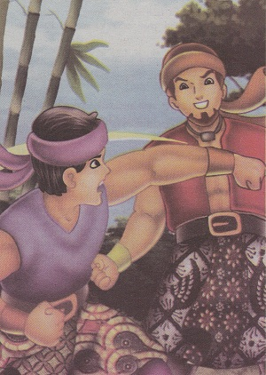

Si Pahit Lidah
( Cerita Rakyat Sumatera Selatan )
Dahulu, di daerah sumidang ada seorang pangeran yang bernama Serunting. Ia adalah anak keturunan raksasa yang bernama Putri Tenggang. Ada satu sifat buruk yang dimilikinya, yaitu selalu iri dengan milik orang lain. Rasa iri ini juga dirasakannya juga kepada saudara iparnya, adik dari istri yang bernama Aria Tebing. Rasa iri tersebut berlanjut dengan pertengkaran diantara keduanya.
Pertengkaran tersebut berlanjut menjadi permusuhan besar. Penyebabnya, mereka memilki ladang padi bersebelahan dengan yang dipisahkan oleh pepohonan. Dibawah pepohonan itu ditumbuhi cendawan atau jamur. Cendawan yang menghadap ladang Aria Tebing tumbuh menjadi cendawan emas sedangkan cendawan yang menghadap ladang serunting hanya cendawan biasa. Serunting menuduh Aria Tebing telah menggunakan ilmunya untuk mengubah cendawan miliknya menjadi tumbuhan ilalang.

Pada suatu hari, terjadilah perkelahian sengit antara Serunting dan Aria Tebing. Karena serunting lebih sakti, Aria Tebing terdesak dan hampir terbunuh. Namun, Aria Tebing berhasil melarikan diri. Kemudian ia menemui dan membujuk kakaknya (istri dari Serunting) untuk memberitahukan rahasia kesaktian serunting. Setelah mengetahui kesaktiannya, serunting kembali menantang Serunting. Serunting menerima tantangan itu.
Ketika perkelahian berada pada puncaknya, Aria Tebing hampir saja dikalahkan. Pada saat terdesak itu, Aria Tebing Melihat ilalang yang bergetar. Segera ia menancapkan tombaknya paada ilalang yang bergetar itu. Seketika, Serunting langsung jatuh dan terluka parah. Serunting kaget, karena adik iparnya dapat mengetahui rahasianya itu, padahal hanya istrinya yang tahu. Merasa dikhianati istrinya, ia pun pergi mengembara
Serunting bertapa ke Gunung Sigantung. Oleh Dewa Mahameru, ia dijanjikan kekuatan gaib. Kesaktian itu berupa kemampuan lidahnya mengubah sesuatu yang diinginkannya. Dengan perasaan gembira, Serunting segera pulang ke kampung asalnya. Dalam perjalanan pulang, ia menguji kesaktiannya. Di tepi Danau Ranau, dijumpainya hamparan pohon tebu yangmenguning. Serunting pun berkata, “Jadilah batu!”. Maka benarlah, tanaman itu berubah menjadi batu. Sejak saat itu serunting mendapat julukan si Pahit Lidah.
Setelah sekian lama berjalan dari suatu daerah ke daerah lainnya, si Pahit Lidah pun sadar atas kesalahannya dan ia ingin menebus segala kesalahan dengan kebaikan. Ia mengubah Bukit Serut yang gundul menjadi hutan kayu yang rimbun. Penduduk setempat sangat senang dan menikmati hasil hutan yang melimpah. Disisa perjalanannya menuju Sumidang, si Pahit Lidah terus berbuat baik kepada sesama makhluk hidup. Setiba dikampung halamannya, rasa dendamnya kepada Aria Tebing pun sudah hilang seiring dengan perbuatan baiknya disepanjang perjalanan.